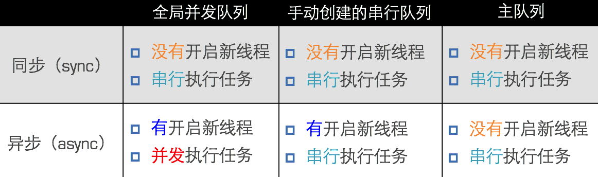

GCD是什么
GCD的全称是Grand Central Dispatch，纯C语言。
GCD会自动利用更多的CPU内核（比如双核、四核）
GCD会自动管理线程的生命周期（创建线程、调度任务、销毁线程）
程序员只需要告诉GCD想要执行什么任务，不需要编写任何线程管理代码
任务与队列
任务
- 同步的方式执行任务
1 | queue：队列 |
- 异步的方式执行任务
1 | dispatch_async(dispatch_queue_t queue, dispatch_block_t block); |
- 阻挡的方式执行任务
在前面的任务执行结束后它才执行，而且它后面的任务等它执行完成之后才会执行
1 | dispatch_barrier_async(dispatch_queue_t queue, dispatch_block_t block); |
同步和异步的区别
- 同步：只能在当前线程中执行任务，不具备开启新线程的能力
- 异步：可以在新的线程中执行任务，具备开启新线程的能力
队列
用来存放任务
- 并发队列
- 可以让多个任务并发（同时）执行（自动开启多个线程同时执行任务）
- 并发功能只有在异步（dispatch_async）函数下才有效
- 串行队列
- 让任务一个接着一个地执行（一个任务执行完毕后，再执行下一个任务）
总结
同步和异步主要影响：能不能开启新的线程
- 同步：只是在当前线程中执行任务，不具备开启新线程的能力。在遇到新的任务时，马上就在当前线程执行新的任务
- 异步：可以在新的线程中执行任务，具备开启新线程的能力。遇到新的任务时，会让当前线程执行完任务，然后开启新的线程，执行新的任务
并发和串行主要影响：任务的执行方式
- 并发：多个任务并发（同时）执行
- 串行：一个任务执行完毕后，再执行下一个任务
创建队列
并发队列
dispatch_queue_create函数创建
1 | dispatch_queue_t dispatch_queue_create(const char *label, // 队列名称 dispatch_queue_attr_t attr); // 队列的类型 创建并发队列 dispatch_queue_t queue = dispatch_queue_create(“SMDEV”, |
dispatch_get_global_queue全局并发队列
1 | dispatch_queue_t dispatch_get_global_queue( dispatch_queue_priority_t priority, // 队列的优先级 unsigned long flags); // 此参数暂时无用，用0即可 获得全局并发队列 dispatch_queue_t queue = dispatch_get_global_queue( |
串行队列
dispatch_queue_create函数创建
// 创建串行队列（队列类型传递NULL或者DISPATCH_QUEUE_SERIAL）
dispatch_queue_t queue = dispatch_queue_create("SMDEV", NULL);
dispatch_get_main_queue（主队列，里面的任务都会在主线程中执行）
dispatch_queue_t queue = dispatch_get_main_queue();
执行效果

注意：如果使用同步函数中往串行队列中添加任务，会造成死循环
原理：同步函数意味着一有新的任务，马上就执行；串行队列意味着所有任务必须严格按照先进先出，后进后出的顺序执行。于是就发生同步任务等串行队列，串行队列等同步任务的死循环。
线程通信
1 | dispatch_async( dispatch_get_global_queue(DISPATCH_QUEUE_PRIORITY_DEFAULT, 0), ^{ // 执行耗时的异步操作... dispatch_async(dispatch_get_main_queue(), ^{ // 回到主线程，执行UI刷新操作 }); }); |
其他用法
延迟执行
dispatch_after(dispatch_time(DISPATCH_TIME_NOW, (int64_t)(2.0 * NSEC_PER_SEC)), dispatch_get_main_queue(), ^{
// 2秒后异步执行这里的代码...
});
一次性代码
1 | static dispatch_once_t onceToken; dispatch_once(&onceToken, ^{ // 只执行1次的代码(这里面默认是线程安全的) }); |
队列组
首先：分别异步执行2个耗时的操作
其次：等2个异步操作都执行完毕后，再回到主线程执行操作
dispatch_group_t group = dispatch_group_create();
dispatch_group_async(group, dispatch_get_global_queue(DISPATCH_QUEUE_PRIORITY_DEFAULT, 0), ^{
// 执行1个耗时的异步操作
});
dispatch_group_async(group, dispatch_get_global_queue(DISPATCH_QUEUE_PRIORITY_DEFAULT, 0), ^{
// 执行1个耗时的异步操作
});
dispatch_group_notify(group, dispatch_get_main_queue(), ^{
// 等前面的异步操作都执行完毕后，回到主线程...
});